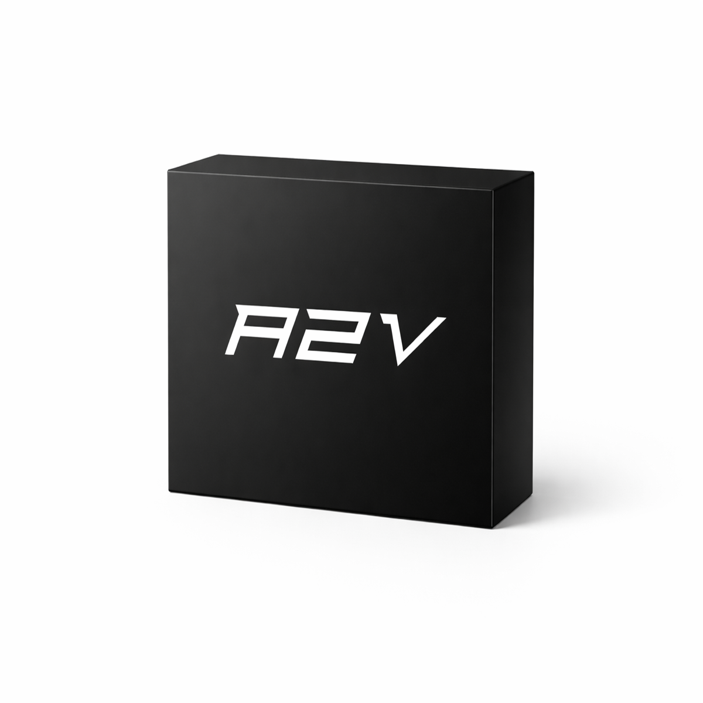

fast creator workflow
convert audio into a shareable video without building a timeline from scratch every time.
 A2V
buy now
A2V
buy now
A2V for Windows
A2V is a focused desktop app for creators who need fast audio-to-video exports without opening a full editing suite. Drop in sound, generate a clean visual package, and move on while the idea is still warm.

built for the moment between finishing the sound and sharing it with the world.
designed to stay out of the way
convert audio into a shareable video without building a timeline from scratch every time.
A2V prioritizes the bundled FFmpeg tools so the app behaves consistently across installs.
installs into your local app programs folder with support files and logs where you can find them.
inside the package
The installer includes A2V, bundled FFmpeg and FFprobe binaries, support files, uninstall files, and third-party license notes for attribution.
available now
purchase securely through Payhip and install on Windows.
support